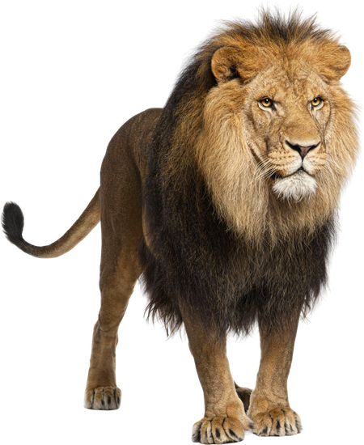
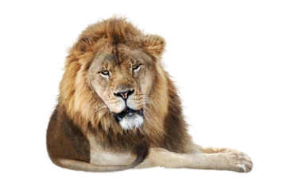
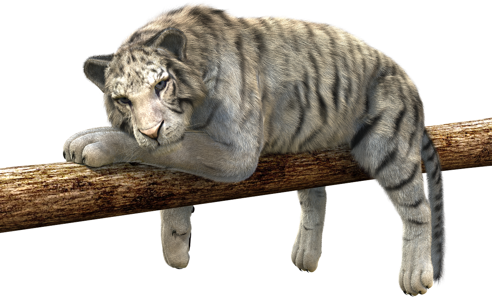
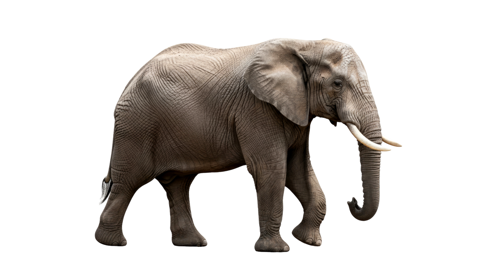
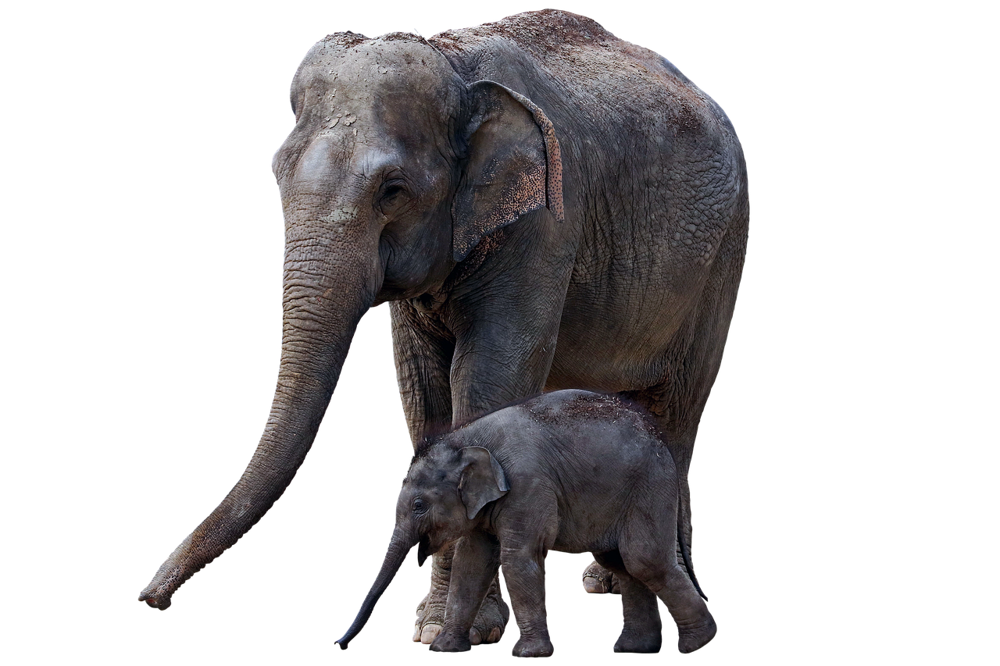
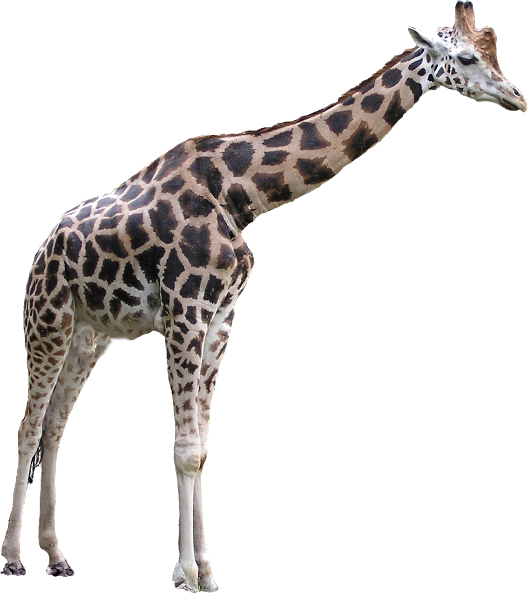
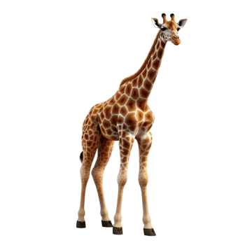
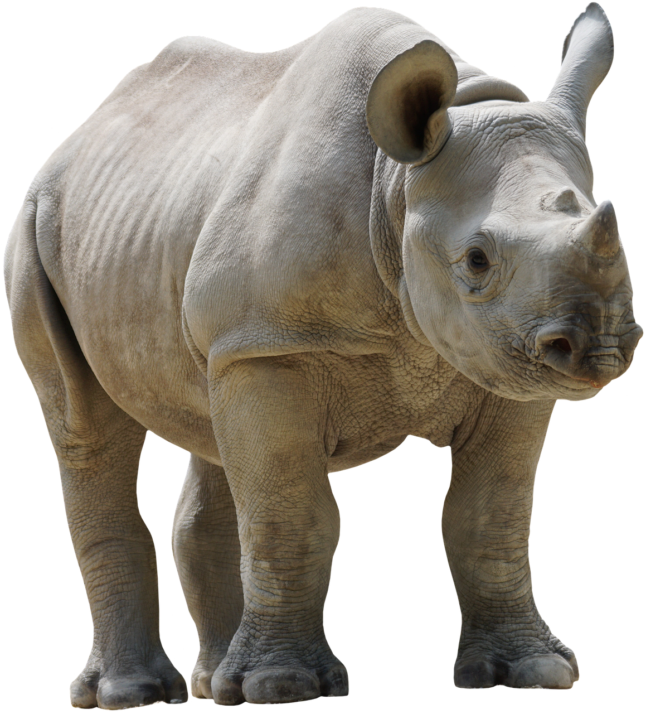
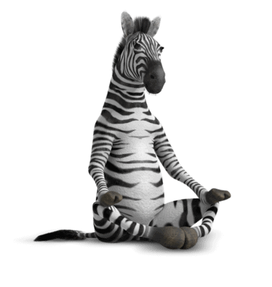
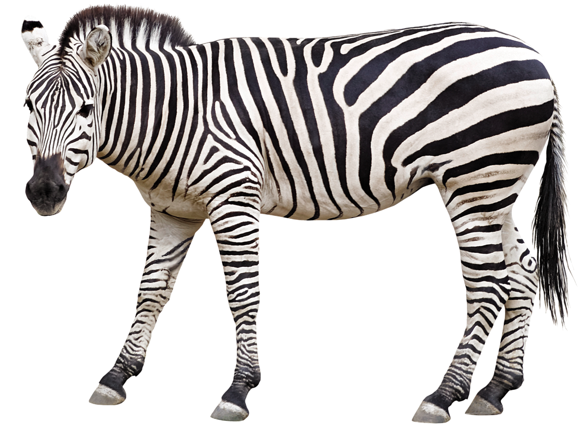

De leeuw staat bekend als de koning van de savanne en is één van de krachtigste roofdieren ter wereld. Hij leeft in groepen, ook wel troepen genoemd, waarin samenwerking belangrijk is bij de jacht.

.webp)
De tijger is één van de meest indrukwekkende en krachtige roofdieren ter wereld. Hij leeft meestal alleen en jaagt in stilte, waarbij hij gebruik maakt van zijn strepen als camouflage in het gras en de jungle.


De olifant is het grootste landdier ter wereld en staat bekend om zijn indrukwekkende kracht én zijn zachte karakter. Hij leeft in hechte familiegroepen die geleid worden door een ervaren vrouwtje.


De giraf is het hoogste landdier ter wereld en is meteen herkenbaar aan zijn lange nek en opvallende vlekkenpatroon. Hij leeft op de savanne en gebruikt zijn lengte om bladeren te eten van hoge bomen waar andere dieren niet bij kunnen.


De neushoorn is een groot en krachtig landdier dat vooral leeft in Afrika en delen van Azië. Hij staat bekend om zijn dikke huid en één of twee hoorns op zijn snuit, die hij gebruikt ter verdediging en om zijn territorium te beschermen.


De zebra is een opvallend dier dat vooral leeft op de Afrikaanse savannes. Hij is makkelijk te herkennen aan zijn zwart-witte strepen, die elk dier uniek maken zoals een vingerafdruk. Zebra’s leven in groepen en blijven samen om zich beter te beschermen tegen roofdieren zoals leeuwen.
